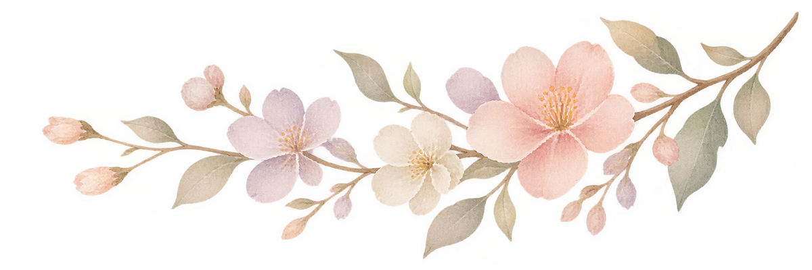
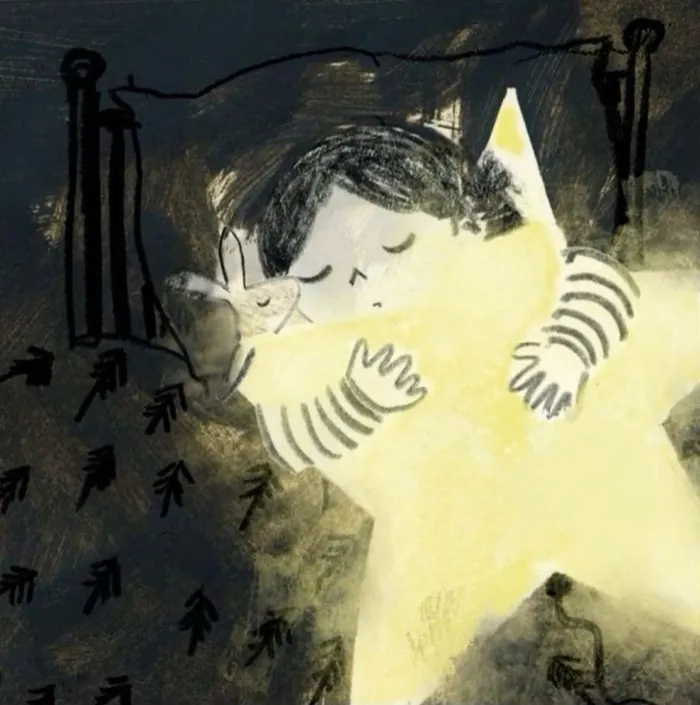

Психолог, гештальт-подход
Маргарита Терво
Я Маргарита Терво. Провожу индивидуальные консультации для взрослых и подростков от 15 лет. Принимаю очно в Санкт-Петербурге и онлайн.
Первая консультация длится 55 минут и стоит 1000 ₽.
пара минут чтобы познакомиться со мной почти вживую


ваш запрос
С чем можно прийти
Отношения
- Мы часто ссоримся и не слышим друг друга
- Мне трудно сказать близким, чего я хочу и что мне не подходит
- Хочется близости, но когда человек становится ближе, мне страшно
- Я снова выбираю людей, с которыми мне трудно быть собой
- Мне сложно говорить «нет» и отстаивать свои границы
- Мне трудно принимать решения без одобрения родителей или близких
Состояния
- Я часто тревожусь, и мне трудно перестать прокручивать одни и те же мысли
- Мне трудно уснуть или я часто просыпаюсь ночью
- Я много сплю, но всё равно чувствую усталость
- Почти ничего не хочется, сил едва хватает на обычные дела
- Я постоянно в напряжении, даже когда можно отдохнуть
- «Хочу, но не могу»: одна часть меня хочет перемен, другая останавливает
Переполняющие чувства
- Мне стыдно, и я долго прокручиваю, что сказал или сделал
- Я быстро злюсь и потом жалею о том, как отреагировал
- Меня накрывает тоска, и трудно вернуться к обычным делам
- Я завидую другим, и сравнения с ними задевают меня
- Ревность занимает много мыслей и мешает доверять
- Мне трудно отпустить обиду, даже когда разговор давно закончился
Адаптация к изменениям в жизни
- Вступаю в брак и привыкаю к новой совместной жизни
- Переживаю расставание или развод
- Начинаю учёбу или заканчиваю её и пока не знаю, что дальше
- Переезжаю и привыкаю к новому месту
- Ребёнок уезжает из дома, и привычная жизнь меняется
- Меняю работу или профессию и осваиваюсь в новом коллективе
«Не понимаю что, но что-то не так»
мои границы
С чем я не работаю
Честно говорю об этом заранее, чтобы вы не тратили время и деньги:
- дети и подростки младше 15 лет
- острые кризисные состояния
Если вам сейчас очень тяжело - сексуальные дисфункции
- наркотические и алкогольные зависимости в активной фазе употребления
- шизофрения и расстройства этого спектра
- работа с парой или семьей целиком

образование
Образование и профессиональная опора
Я окончила бакалавриат СПбГУ по психологии с отличием. Участвовала в программах по работе с детьми и подростками и по навыкам консультирования. Сейчас учусь на первой ступени Московского Гештальт Института.
В практике я опираюсь на личную терапию, супервизию и обсуждение профессиональных вопросов с коллегами.



опора в работе
Я работаю не одна
Я человек, а у всех людей есть свои ограничения, и я отношусь к этому ответственно. Поэтому у меня выстроена система опор – вот как она устроена:
- Личная терапия
- Индивидуальная супервизия в гештальт-подходе
- Групповая супервизия в гештальт-подходе
- Групповая супервизия с коллегами разных подходов
- Интервизии с коллегами разных подходов
Наша с вами сессия
Супервизия – разбор сложных моментов работы с более опытным специалистом, один на один или в группе.
Интервизия – такой же разбор с коллегами на равных. Всегда без имён и деталей, по которым вас можно узнать.
За нашей работой стоит не только мой опыт, но и опыт моих коллег и наставников.
Как я работаю
В гештальт-подходе мы обращаем внимание на то, что вы замечаете в разговоре: чувства, реакции и потребности. Вместе смотрим, как это связано с тем, что происходит в вашей жизни.
На встрече можно говорить в своем темпе и выбирать, чем хочется поделиться. Я задаю вопросы и делюсь наблюдениями, которые мы можем обсудить.


как я работаю
На сессиях я
-
Не командую вами, не «тяну» в ту или иную сторону, не давлю
Способствую тому, чтобы вы могли говорить о том и так, как хочется вам. Если мне кажется, что мы далеко ушли от темы запроса, могу мягко это обозначить и поинтересоваться, хотелось бы ли вам вернуться к изначальной теме. Если у меня есть какое-то предположение, открыто выношу его на обсуждение.
-
Не оцениваю
Обращаюсь к вашим чувствам или говорю, что чувствую относительно ваших слов.
-
Не даю советов и, соответственно, не агитирую в сторону их выполнения
Даю рекомендации в рамках моей компетенции: техники, упражнения, обращение к смежным специалистам.
-
Не перевожу внимание на свою жизнь и свои переживания
И ваше, и свое внимание направляю на вас. Этот час для того, чтобы своими мыслями, чувствами и происшествиями могли поделиться вы. Я говорю о своих чувствах или опыте только относительно ваших слов и процесса работы, и только если вижу это полезным и уместным.
Первая консультация
Мы знакомимся и обсуждаем, что привело вас на встречу и чего вы ждете от работы. Можно начать с того, о чем говорить легче. После встречи вы сами решаете, хотите ли продолжать.
Стоимость и форматы
Первая консультация в любом формате стоит 1000 ₽ и длится 55 минут. Последующие встречи стоят 2700 ₽ онлайн и 3200 ₽ очно. Для студентов действует тариф 2000 ₽, для получателей государственной социальной помощи 1500 ₽.
давайте знакомиться
Написать
В личных сообщениях можно задать вопрос об условиях или договориться о первой встрече. Если сложно сформулировать запрос, можно начать с нескольких слов.
Частые вопросы
На странице условий можно узнать, как проходит первая встреча, что происходит с предоплатой при отмене и как оформляется согласие для подростков.